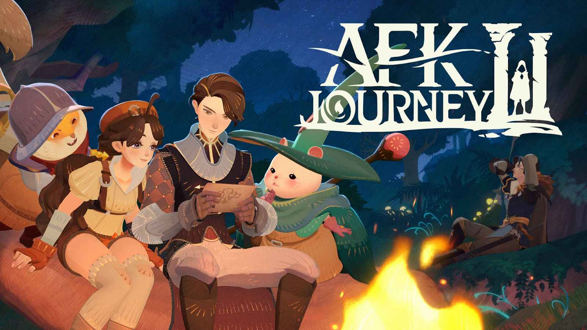

Cara Farming Resource di AFK Journey, Auto Progress Cepat!

AFK Journey adalah game idle RPG terbaru yang menawarkan pengalaman bermain santai dengan fitur auto-battle dan sistem farming otomatis. Namun, untuk mencapai progres yang cepat, pemain harus tahu cara efektif dalam mengumpulkan berbagai resource seperti Gold, EXP, Hero Essence, dan item penting lainnya. Jika tidak dikelola dengan baik, progress bisa menjadi lebih lambat dan sulit untuk mencapai level yang lebih tinggi. Dalam panduan ini, kita akan membahas cara terbaik untuk farming resource di AFK Journey agar kamu bisa mempercepat progress tanpa harus terus-menerus bermain secara manual. Dengan strategi yang tepat, kamu dapat memanfaatkan fitur idle dan grinding spot terbaik untuk mengoptimalkan farming.
1. Memanfaatkan Sistem Idle Rewards
Salah satu fitur utama di AFK Journey adalah Idle Rewards, di mana pemain tetap mendapatkan resource meskipun sedang tidak bermain. Sistem ini akan terus mengumpulkan Gold, EXP, dan Hero Essence secara otomatis selama beberapa jam. Pastikan untuk selalu mengklaim idle rewards setiap kali masuk ke dalam game agar tidak ada resource yang terbuang sia-sia. Hadiah idle akan terus bertambah meskipun kamu sedang offline, jadi sangat penting untuk mengklaimnya secara rutin. Jangan biarkan resource menumpuk terlalu lama tanpa diklaim karena ada batas maksimum penyimpanan. Jika sudah mencapai batas tersebut, resource tambahan tidak akan tersimpan dan berpotensi terbuang sia-sia.
Upgrade Camp Level untuk meningkatkan jumlah resource yang dikumpulkan saat idle farming. Semakin tinggi level camp, semakin besar kapasitas pengumpulan resource yang bisa diperoleh dari idle farming. Pastikan untuk selalu memperbarui dan mengupgrade camp dengan resource yang kamu miliki agar progres game menjadi lebih cepat dan efisien. Ini juga akan membantu dalam meningkatkan daya tahan dan perkembangan tim secara keseluruhan.
Gunakan Idle Reward Boosters jika tersedia untuk menggandakan jumlah resource yang diperoleh. Beberapa event atau fitur dalam game sering memberikan boost yang bisa meningkatkan jumlah resource yang kamu dapatkan dari idle farming. Jangan lupa untuk memanfaatkan booster ini terutama ketika kamu berencana offline dalam waktu lama agar hasil farming jadi lebih optimal.
2. Grinding di Adventure Mode dan Campaign
Adventure Mode dan Campaign adalah dua mode utama dalam AFK Journey yang memberikan banyak resource penting. Setiap kali menyelesaikan stage dalam Campaign, pemain akan mendapatkan Gold, EXP, serta berbagai item lainnya yang berguna untuk peningkatan karakter. Prioritaskan menyelesaikan stage yang lebih tinggi agar resource yang didapatkan lebih besar. Jangan lupa mengulang stage sebelumnya untuk mengumpulkan resource tambahan jika mengalami kesulitan di level lebih tinggi.
Gunakan fitur Auto-Battle agar tidak perlu melakukan grinding secara manual dan tetap mendapatkan resource dengan efisien. Dengan menyelesaikan Campaign dengan cepat, pemain bisa mendapatkan lebih banyak hadiah dan mempercepat progres permainan.
3. Rajin Mengikuti Daily & Weekly Quest
Daily dan Weekly Quest adalah salah satu cara paling efisien untuk farming resource di AFK Journey. Quest ini biasanya memberikan Gold, Hero Essence, dan berbagai material peningkatan karakter. Pastikan untuk menyelesaikan semua Daily Quest setiap hari agar tidak kehilangan resource gratis yang sangat berguna untuk perkembangan karaktermu, seperti EXP, gold, atau item langka. Jangan sampai melewatkan kesempatan ini karena tugas harian biasanya mudah diselesaikan dalam waktu singkat!
Weekly Quest menawarkan reward yang lebih besar, seperti mata uang premium, equipment, atau material langka. Jadi, pastikan kamu memenuhi semua target dalam seminggu agar tidak melewatkan hadiah eksklusif yang bisa memperkuat karaktermu dan mempercepat progres permainan. Gunakan fitur Quick Complete jika tersedia untuk menyelesaikan beberapa quest secara instan tanpa perlu menghabiskan banyak waktu.
Dengan menyelesaikan quest secara konsisten, kamu bisa mengumpulkan banyak resource tanpa harus mengandalkan grinding berlebihan.
4. Farming di Tower Mode untuk Hadiah Eksklusif
Tower Mode adalah mode tantangan yang menawarkan berbagai hadiah menarik jika pemain berhasil menyelesaikan setiap lantai. Setiap lantai yang diselesaikan akan memberikan Gold, Hero EXP, dan item langka. Semakin tinggi lantai yang kamu capai, semakin besar hadiahnya. Gunakan tim dengan komposisi terbaik agar bisa mengalahkan musuh di setiap lantai dengan lebih mudah. Mode ini cocok untuk farming resource tambahan tanpa perlu grinding terlalu lama.
5. Manfaatkan Guild dan Fitur Multiplayer
Bergabung dalam Guild juga bisa menjadi cara efektif untuk mendapatkan resource di AFK Journey. Beberapa fitur yang bisa dimanfaatkan dalam Guild antara lain:
- Guild Raid: Menyerang Boss bersama anggota guild untuk mendapatkan hadiah eksklusif.
- Guild Donation: Menyumbangkan item tertentu untuk mendapatkan resource tambahan.
- Guild Shop: Menukarkan resource yang dikumpulkan dengan item penting.
Bermain dalam komunitas akan mempercepat progres karena banyak keuntungan yang tidak bisa didapatkan dalam mode solo.
6. Event dan Limited-Time Rewards
AFK Journey sering menghadirkan event spesial yang memberikan banyak hadiah gratis kepada pemain yang aktif. Ikuti event mingguan dan bulanan untuk mendapatkan item eksklusif, Gold, dan Hero Essence. Selesaikan tantangan dalam event untuk mendapatkan resource dalam jumlah besar. Jangan lupa klaim login reward jika ada event login harian.
Event dalam game sering kali memberikan reward yang jauh lebih besar dibandingkan dengan grinding biasa, jadi pastikan untuk selalu mengecek update terbaru.
7. Memanfaatkan AFK Arena untuk Farming Tambahan
Beberapa mode dalam AFK Journey memungkinkan pemain untuk farming tambahan tanpa harus bermain secara aktif. Beberapa di antaranya adalah:
- Arena Mode: Bertarung melawan pemain lain untuk mendapatkan hadiah Gold dan EXP.
- Expedition Mode: Menjelajahi area tertentu untuk menemukan resource tersembunyi.
- Hero Training Mode: Menggunakan hero tertentu dalam latihan untuk mendapatkan hadiah tambahan.
Mode ini bisa menjadi cara alternatif untuk farming jika kamu sudah kehabisan sumber daya dari mode utama.
8. Tips Tambahan agar Farming Resource Lebih Efisien
Agar bisa farming dengan lebih optimal, ada beberapa tips tambahan yang bisa kamu terapkan dalam bermain AFK Journey:
- Gunakan Auto-Battle selama mungkin agar tetap mendapatkan resource tanpa harus bermain terus-menerus.
- Prioritaskan upgrade hero yang digunakan dalam mode farming agar mereka bisa bertahan lebih lama.
- Jangan lupa login setiap hari untuk mengklaim hadiah harian yang bisa mempercepat farming.
- Gunakan fitur Friend System untuk mendapatkan bantuan dalam battle, sehingga bisa menyelesaikan misi dengan lebih mudah.
Kesimpulan
Farming resource di AFK Journey memang membutuhkan strategi yang tepat agar progres permainan kamu bisa lebih cepat. Dengan memanfaatkan sistem idle rewards, grinding di Adventure Mode, mengikuti quest harian, serta memanfaatkan event dan guild, kamu bisa mengumpulkan resource lebih banyak tanpa perlu bermain terus-menerus. Jangan lupa juga untuk memanfaatkan fitur-fitur lain seperti Tower Mode dan AFK Arena agar hasil farming semakin optimal.
Ingin mempercepat progresmu lebih cepat? Coba Top Up AFK Journey di Topupgim untuk mendapatkan berbagai item premium yang akan membantu kamu dalam perjalanan farming resource yang lebih efektif!